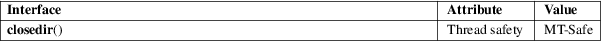

closedir − close a directory
Standard C library (libc, −lc)
#include
<sys/types.h>
#include <dirent.h>
int closedir(DIR *dirp);
The closedir() function closes the directory stream associated with dirp. A successful call to closedir() also closes the underlying file descriptor associated with dirp. The directory stream descriptor dirp is not available after this call.
The closedir() function returns 0 on success. On error, −1 is returned, and errno is set to indicate the error.
|
EBADF |
Invalid directory stream descriptor dirp. |
For an explanation of the terms used in this section, see attributes(7).

POSIX.1-2008.
POSIX.1-2001, SVr4, 4.3BSD.
close(2), opendir(3), readdir(3), rewinddir(3), scandir(3), seekdir(3), telldir(3)